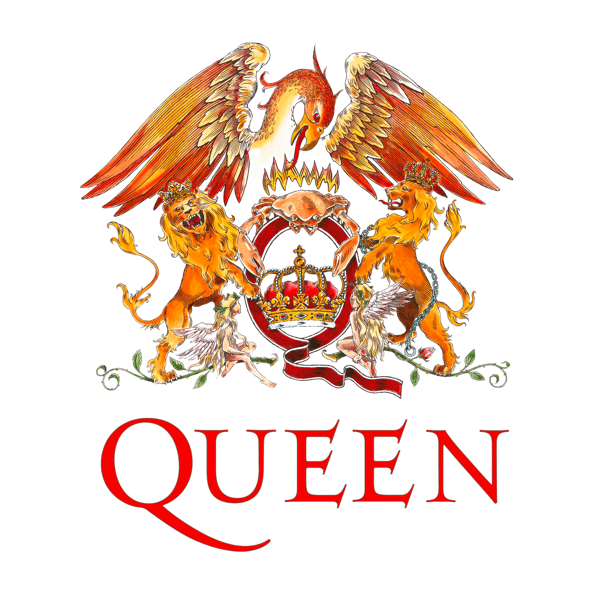

Freddie Mercury, de son vrai nom Farrokh Bulsara, est né le 5 septembre 1946 à Zanzibar et est décédé le 24 novembre 1991 à Londres. Il était un chanteur, compositeur et musicien britannique d'origine zanzibari et indienne. Il est surtout connu comme le chanteur principal du groupe de rock Queen, célèbre pour sa voix puissante et sa présence scénique charismatique. Mercury a écrit de nombreux succès du groupe, dont "Bohemian Rhapsody", "Somebody to Love" et "We Are the Champions". Sa carrière musicale a été marquée par son style flamboyant et son talent exceptionnel, faisant de lui l'une des figures les plus emblématiques de la musique rock.